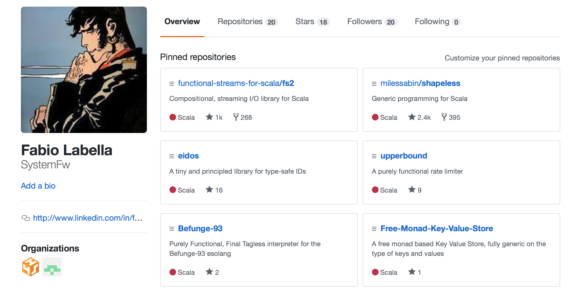

<!doctype html>
<html lang="en">
    <head>
        <meta charset="utf-8">
        <title>Declarative control flow with fs2 Streams</title>
        <link rel="stylesheet" href="./css/reveal.css">
        <link rel="stylesheet" href="./css/theme/solarized.css" id="theme">
        <link rel="stylesheet" href="./css/highlight/solarized-light.css">
        <link rel="stylesheet" href="./css/print/paper.css" type="text/css" media="print">

    </head>
    <body>

        <div class="reveal">
            <div class="slides"><section  data-markdown><script type="text/template">


# fs2
Declarative control flow with Streams<!-- .element: class="fragment" -->

<aside class="notes"><ul>
<li>Remember to poll the audience for background</li>
<li>This talk is about a Scala purely streaming IO library called fs2</li>
<li>This talk is really about declarative control flow</li>
</ul>
</aside></script></section><section  data-markdown><script type="text/template">
## About me



<aside class="notes"><ul>
<li>Senior software engineer in the financial industry </li>
<li>Open source author, pure FP Scala: </li>
<li>fs2 maintainer, maintainer or contrib to http4s, cats-effect, cats, shapeless</li>
</ul>
</aside></script></section><section ><section data-markdown><script type="text/template">
## cats-effect 

**`IO[A]`** <!-- .element: class="fragment" -->

- <!-- .element: class="fragment" --> Produces one value, fails or never terminates
- <!-- .element: class="fragment" --> *Referentially transparent* (pure)
- <!-- .element: class="fragment" --> Compositional
- <!-- .element: class="fragment" --> Many algebras (monad,...)
</script></section><section data-markdown><script type="text/template">
## Data processing

```scala
def process(in: List[String]): List[String] =
  in
   .filter(s => !s.trim.isEmpty && !s.startsWith("//"))
   .map(_.toUppercase)
   .take(100)
```
<!-- .element: class="fragment" -->

```scala
def p: IO[List[String]] = IO(readListFromFile(f)).map(process)
```
<!-- .element: class="fragment" -->

<aside class="notes"><ul>
<li>process is compositional</li>
<li>IO keeps compositionality with effects</li>
<li>Memory usage</li>
</ul>
</aside></script></section></section><section ><section data-markdown><script type="text/template">
## fs2 Streams

**`Stream[F[_], A]`** <!-- .element: class="fragment" -->

-  <!-- .element: class="fragment" --> emits `0...n ` values of type `A`, where `n` can be ∞ 
-  <!-- .element: class="fragment" --> While requesting effects in `F`
-  <!-- .element: class="fragment" --> `F` is normally `IO`

<aside class="notes"><ul>
<li>also pure, compositional, possesses algebras</li>
</ul>
</aside></script></section><section data-markdown><script type="text/template">
## Streaming IO!

```scala
def fahrenheitToCelsius(f: Double): Double =
  (f - 32.0) * (5.0/9.0)

def converter: Stream[IO, Unit] =
  io.file.readAll[IO](Paths.get("testdata/fahrenheit.txt"), 4096)
    .through(text.utf8Decode)
    .through(text.lines)
    .filter(s => !s.trim.isEmpty && !s.startsWith("//"))
    .map(line => fahrenheitToCelsius(line.toDouble).toString)
    .intersperse("\n")
    .through(text.utf8Encode)
    .through(io.file.writeAll(Paths.get("testdata/celsius.txt")))
```
</script></section></section><section ><section data-markdown><script type="text/template">
## Control Flow

<aside class="notes"><ul>
<li>if you need streaming, fs2 is perfect</li>
<li>if you don&#39;t, is it useful? YES</li>
</ul>
</aside></script></section><section data-markdown><script type="text/template">
## fs2 Streams

```scala
Stream.emit(1, 2, 3)

Stream.eval { IO(println("hello") }

Stream.repeatEval { IO(println("hello") }
```
<!-- .element: class="fragment" -->

```scala
val action : IO[Unit] = yourStream.compile.drain
```
<!-- .element: class="fragment" -->
```scala
mainAction.unsafeRunSync
```
<!-- .element: class="fragment" -->

<aside class="notes"><ul>
<li>Compose Streams together</li>
<li>Run Streams by compiling to IO</li>
<li>can compose the IOs</li>
<li>run at the end of the world</li>
</ul>
</aside></script></section><section data-markdown><script type="text/template">
### List with superpowers: `++`

```scala
List.range(1, 100).take(3) ++ List(21, 22)
// List(1, 2, 3, 21, 22)
```
<!-- .element: class="fragment"  -->


```scala
def put[A](a: A) = IO(println(a))

Stream.repeatEval(put("hello")).take(3) ++ Stream.eval(put("world"))
// hello
// hello
// hello
// world
```
<!-- .element: class="fragment"  -->
</script></section><section data-markdown><script type="text/template">
### List with superpowers: flatMap

```scala
List(1,2,3).flatMap(x => List(x,x))
// List(1, 1, 2, 2, 3, 3)
```
<!-- .element: class="fragment"  -->


```scala
def put[A](a: A) = IO(println(a))

Stream(1, 2, 3).flatMap(x => Stream.repeatEval(put(x)).take(2))
// 1
// 1
// 2
// 2
// 3
// 3
```
<!-- .element: class="fragment"  -->
</script></section><section data-markdown><script type="text/template">
### List with superpowers: zip

```scala
List(1,2,3).zip(List("a", "b", "c"))
// List((1, "a"), (2, "b"), (3, "c"))
```
<!-- .element: class="fragment"  -->


```scala
def put[A](a: A) = IO(println(a))

def printRange = Stream.range(1, 10).evalMap(put)

def seconds = Stream.awakeEvery_[IO](1.second)

seconds.zip(printRange)

// 1
// ...1 second
// 2
// ...1 second
// 3

```
<!-- .element: class="fragment"  -->
</script></section><section data-markdown><script type="text/template">
### Example

```scala
def healthCheck: IO[Boolean] = IO {...}
```
<!-- .element: class="fragment"  -->
```scala
def healthCheck: Stream[IO, Message] = {
  val retryCheck = 
    Stream.retry(healthCheck, 1.second, _ + 1, maxRetries = 5)
    
  val check = 
    retryCheck
      .map(HealthCheckMessage(_))
      .handleError(_ => ErrorMessage)
      
  val repeatedChecks =
    (check ++ Stream.sleep_(1.hour)).repeat
    
 repeatedChecks
}

```
<!-- .element: class="fragment"  -->

<aside class="notes"><ul>
<li>Compare to just IO?</li>
</ul>
</aside></script></section><section data-markdown><script type="text/template">
### Declarative control flow

- Create simple single actions in IO <!-- .element: class="fragment" -->
- Use Stream to assemble them <!-- .element: class="fragment" -->
- High level, declarative, composable <!-- .element: class="fragment" -->
</script></section><section data-markdown><script type="text/template">
### Declarative control flow

`IOs` are your _words_, `Streams` are your _sentences_
</script></section></section><section ><section data-markdown><script type="text/template">
## Concurrency
</script></section><section data-markdown><script type="text/template">
### Concurrency features

- Stream concurrency <!-- .element: class="fragment" -->
- Concurrent coordination and data structures <!-- .element: class="fragment" -->
- Run on thread pools <!-- .element: class="fragment" -->
- Nonblocking <!-- .element: class="fragment" -->
- Resource safe <!-- .element: class="fragment" -->
</script></section><section data-markdown><script type="text/template">
### Why concurrency

- Streams are like logical threads of execution <!-- .element: class="fragment" -->
- Interleaving logical threads allows complex behaviour <!-- .element: class="fragment" -->
- Still declarative and composable <!-- .element: class="fragment" -->
- Pure FP for the real world <!-- .element: class="fragment" -->

<aside class="notes"><ul>
<li>FP not good for effects, it&#39;s actually where it shines</li>
</ul>
</aside></script></section><section data-markdown><script type="text/template">
### Concurrency

```scala
def healthCheck: Stream[IO, Message] = ???
def kafkaMessages: Stream[IO, Message] = ???
def celsiusConverter: Stream[IO, Unit] = ???
```
<!-- .element: class="fragment"  -->

```scala
def all: Stream[IO, Message] = Stream(
   healthCheck,
   celsiusConverter.drain,
   kafkaMessages
 ).covary[IO].joinUnbounded
 
 all.flatMap { ... }
```
<!-- .element: class="fragment"  -->

<aside class="notes"><ul>
<li>interruptions, errors</li>
<li>you can avoid the whole thing failing</li>
<li>files are closed</li>
</ul>
</aside></script></section><section data-markdown><script type="text/template">
### Concurrency

```scala
def stopAfter[A](in: Stream[IO, A], f: Duration): Stream[IO, A] = {
```
<!-- .element: class="fragment"  -->
```scala
  def out(s: Signal[IO, Boolean]): Stream[IO, A] = 
    in.interruptWhen(s)
```
<!-- .element: class="fragment"  -->
```scala
  def stop(s: Signal[IO, Boolean]): Stream[IO, Unit] = 
    Stream.sleep_[IO](f) ++ Stream.eval(s.set(true))
```
<!-- .element: class="fragment"  -->
```scala
  Stream.eval(async.signalOf[IO, Boolean](false)).flatMap {
    stopSignal =>
      val stopper = stop(stopSignal)
      val runner = out(stopSignal)
      // runner _what?_ stopper
   ```
<!-- .element: class="fragment"  -->
```scala
      runner.concurrently(stopper)
  }
}
```
<!-- .element: class="fragment"  -->
</script></section><section data-markdown><script type="text/template">
### Concurrency

```scala
def stopAfter[A](f: Duration): Stream[IO, A] => Stream[IO, A] = 
  in => {
   def close(s: Signal[IO, Boolean]): Stream[IO, Unit] = 
     Stream.sleep_[IO](f) ++ Stream.eval(s.set(true))
    
   Stream.eval(signalOf[IO, Boolean](false)).flatMap { end =>
    in.interruptWhen(end).concurrently(close(end)))
  }
}
```

```scala
Stream
 .repeatEval(IO(println("hello")))
 .through(stopAfter(2.seconds))
```
<!-- .element: class="fragment"  -->
</script></section><section data-markdown><script type="text/template">
## Go wild!
</script></section></section><section  data-markdown><script type="text/template">
# FS2 Streams

- For data that's too big to fit in memory <!-- .element: class="fragment" -->
- For control flow that's too hard to fit in one's head <!-- .element: class="fragment" -->
</script></section><section  data-markdown><script type="text/template">
# Questions?

- I'm not on Twitter, reach out on Gitter @SystemFw
- Thanks to @mpilquist and @pchlupacek
</script></section></div>
        </div>

        <script src="./lib/js/head.min.js"></script>
        <script src="./js/reveal.js"></script>

        <script>
            function extend() {
              var target = {};
              for (var i = 0; i < arguments.length; i++) {
                var source = arguments[i];
                for (var key in source) {
                  if (source.hasOwnProperty(key)) {
                    target[key] = source[key];
                  }
                }
              }
              return target;
            }

            // Optional libraries used to extend on reveal.js
            var deps = [
              { src: './lib/js/classList.js', condition: function() { return !document.body.classList; } },
              { src: './plugin/markdown/marked.js', condition: function() { return !!document.querySelector('[data-markdown]'); } },
              { src: './plugin/markdown/markdown.js', condition: function() { return !!document.querySelector('[data-markdown]'); } },
              { src: './plugin/highlight/highlight.js', async: true, callback: function() { hljs.initHighlightingOnLoad(); } },
              { src: './plugin/zoom-js/zoom.js', async: true },
              { src: './plugin/notes/notes.js', async: true },
              { src: './plugin/math/math.js', async: true }
            ];

            // default options to init reveal.js
            var defaultOptions = {
              controls: true,
              progress: true,
              history: true,
              center: true,
              transition: 'default', // none/fade/slide/convex/concave/zoom
              dependencies: deps
            };

            // options from URL query string
            var queryOptions = Reveal.getQueryHash() || {};

            var options = {"transition":"slide"};
            options = extend(defaultOptions, options, queryOptions);
            Reveal.initialize(options);
        </script>
        
    </body>
</html>
